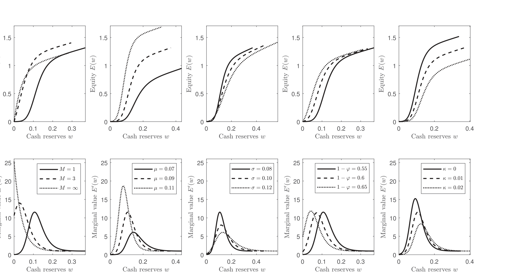
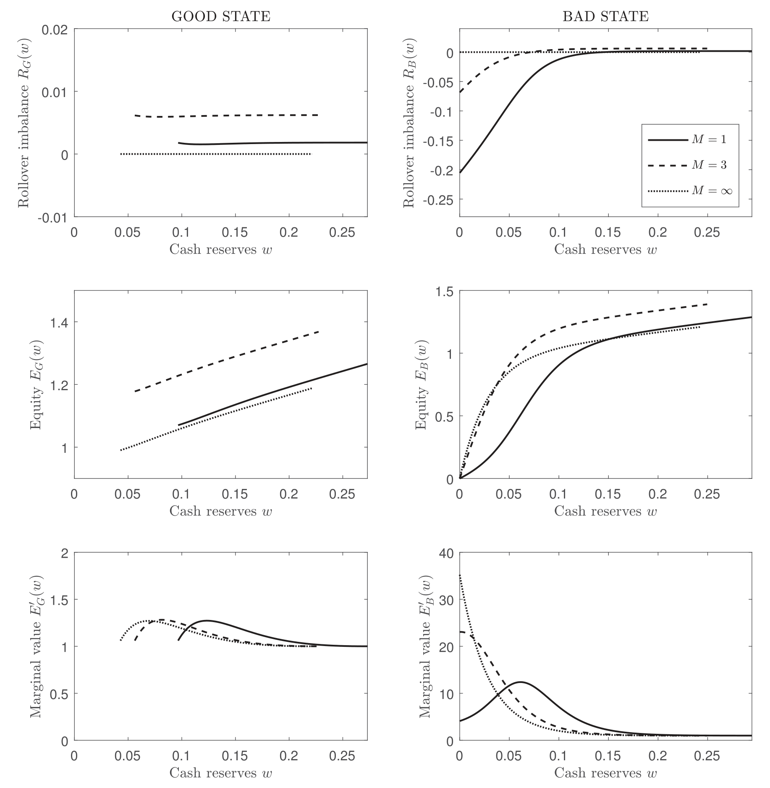
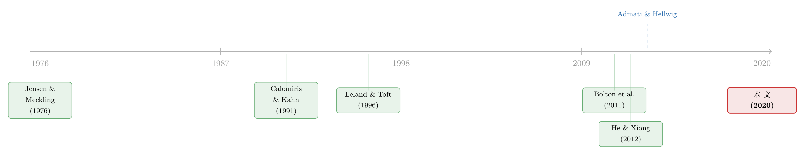

短债真的能「管住」股东吗？——一个关于「滚动陷阱」的反转
本文读的是 Della Seta, Morellec & Zucchi (2020, JFE)：在一个有融资摩擦、债务又被公平定价的世界里，短期债务不但不能抑制道德风险，反而会催生股东的风险承担动机。当公司逼近困境，「经营亏损」与「滚动亏损」相互喂养，把股东推进一个「滚动陷阱」（rollover trap）——此时把资产搞得更险，竟成了理性选择。债务期限足够长，这种激励就消失了。
1 一个被广泛相信、却屡屡被现实打脸的信条
公司金融里有一个几乎写进教科书的直觉：短债能管住人。
逻辑听起来天衣无缝。Jensen 和 Meckling (1976) 早就指出，有限责任下的股东天生爱冒险——赌赢了归自己，赌输了甩给债权人。这就是经典的 风险转移 (risk-shifting)。而 Leland 和 Toft (1996) 顺势给出了药方：这种代理成本「可以通过使用更短期限的债务大幅削弱甚至消除」。银行业那边，自 Calomiris 和 Kahn (1991) 起，一整支文献都在说同一件事：短债天然脆弱，这份脆弱本身就是一根悬在管理层头顶的剑——谁敢乱来，债权人明天就不续了。
可现实呢？
Graham 和 Harvey (2001) 走访了一大批 CFO，几乎找不到「短债让股东不敢上风险项目」的证据。Chen 和 Duchin (2019) 更直接：那些短债堆得高的公司，一旦逼近困境，反而会去买金融证券、把资产搞得更险。最刺眼的是 2007–2009 那场危机——Admati 和 Hellwig (2013) 一针见血地问：危机前金融机构对短债的依赖节节攀升，与此同时它们的活动却一个比一个激进，如果短债真能「管住人」，这画面怎么解释？
于是张力来了：理论说短债是缰绳，数据却一次次显示它是油门。到底哪里错了？
2 缺失的那一块拼图：融资摩擦 + 公平定价
本文的回答，落在两个被以往模型轻轻略过、却恰恰是真实世界标配的特征上：融资摩擦 (financing frictions) 与 风险债务的公平定价 (fair pricing of risky debt)。
先看融资摩擦这一侧。已有的现金流摩擦模型（如 Décamps et al., 2011；Bolton et al., 2011）早就告诉我们：一个有偿付能力、但被融资摩擦卡住脖子的公司，股东会表现得像个风险厌恶者——因为低效清算的威胁悬在那里，他们宁可囤现金、求稳。Leland (1994a) 和 Toft、Prucyk (1997) 在另一套设定里也得到类似结论：当违约可以被债务契约或资本金要求外生地触发，股东无法自由地选择违约时机，股权价值函数就变凹，股东于是「行为上」变得厌恶风险。
接着，一个自然的问题是：把公平定价的短期债务塞进这样一个有摩擦的世界，会发生什么？
这正是本文的主战场。以往那些「短债 → 滚动亏损 → 信用风险上升」的模型（He & Xiong, 2012a；Cheng & Milbradt, 2012；等等），几乎都默认股东口袋无限深——滚动时缺的钱，随时无成本注资即可。本文偏偏把这个假设拿掉：股东不能瞬时、无成本地发新股来填补滚动缺口。一旦填不上，公司就会被强制、低效地清算。
这一步看似只是「去掉一个便利假设」，实则是整篇文章的命门。正是「股东无法自由优化违约决策」这件事，把短债从缰绳变成了油门。
3 模型：现金储备如何被「滚动亏损」一点点啃噬
这是一篇结构模型论文，核心机制全藏在现金储备的演化方程里。我们一步步拆开。
资产与现金流。 公司持有一组规模归一的风险资产，税后现金流服从一个算术布朗运动 (arithmetic Brownian motion)：
$$ dY_t = (1-\theta)\,(\mu\,dt + \sigma\,dZ_t), $$
其中 \(\mu,\sigma>0\) 为常数，\(Z_t\) 是标准布朗运动，\(\theta\in(0,1)\) 是公司税率。任意区间 \((t,t+dt)\) 内，税后现金流近似正态，均值 \((1-\theta)\mu\,dt\)、波动率 \((1-\theta)\sigma\sqrt{dt}\)——既能赚，也能亏。注意这里用算术（而非几何）布朗运动，是为了和 Décamps et al. (2011)、Bolton et al. (2011) 那支摩擦文献对齐；论文在附录里证明结论并不依赖这一具体设定。
风险承担的工具。 股东可以通过持有零 NPV、但回报随机的头寸来调节资产风险——具体地，公司能交易价格服从布朗运动 \(B_t\) 的期货合约，且这个 \(B_t\) 与驱动现金流的 \(Z_t\) 正相关：
$$ \mathbb{E}[dZ_t\,dB_t] = \rho\,dt, \qquad \rho\in[0,1]. $$
正相关意味着「加风险」会在公司资产间制造同向的大跌——这一点之后会成为股东与债权人冲突的关键。期货头寸 \(\gamma_t\) 受保证金约束，不能超过上限 \(\Gamma\)。与 Leland (1998) 不同，本文不把风险增量定死成外生常数，而是让股东在 \(0\) 到上限之间内生地选。
债务与滚动。 公司发行了本金 \(P\)、总票息 \(C<\mu\) 的债。每一刻按比例 \(m\) 滚动其债务：连续地以 \(mP\) 的速率退掉旧债本金，再以同样的票息、本金、优先级发新债。无违约时，平均债务期限 \(M\equiv 1/m\)。发债有比例成本 \(\kappa\)。当新债的市价（扣除发行成本）低于到期本金时，公司就要承受滚动亏损——这笔窟窿，得由股东用现金或新股去填。
把这些拼起来，就得到现金储备 \(W_t\) 的演化方程。这是全文最核心的一个式子，我们把它逐项标注出来：
直觉是这样的：现金储备 \(W_t\) 像一个水池。经营冲击（\(a_1\)）和滚动盈亏（\(a_2\)）往里注水或抽水，派息（\(a_3\)）放水，发新股（\(a_4\)）补水。当 \(W_t\) 触到 \(0\)、又补不上水时，公司被清算。
「滚动陷阱」由此诞生。 注意 \(a_2\) 这一项：新债市价 \(D_i(W)\) 是随公司表现实时重定价的。公司一旦遭遇负向经营冲击，违约风险上升 → 新债卖不起价（\(D_i(W)\) 下跌）→ 滚动亏损扩大 → 现金被进一步抽干 → 违约风险再上一个台阶。经营亏损与滚动亏损相互喂养，形成一个放大回路。 期限越短（\(m\) 越大、\(M=1/m\) 越小），每一刻要滚动的比例越高，这个放大器就越猛。当公司逼近困境、期限又足够短时，滚动亏损会超过净利润——预期净现金流变负，公司开始「烧」现金储备。这,就是论文命名的 滚动陷阱。
目标函数。 管理层选择派息 \(U\)、融资 \(H\)、风险 \(\gamma\)、违约 \(\tau\) 四套策略，最大化股东价值：
$$ E(U,H,\gamma,\tau) \;=\; \mathbb{E}\!\left[\int_0^{\tau} e^{-rt}\,(dU_t - dH_t) \;+\; e^{-r\tau}\max\{0;\ \ell + W_\tau - P\}\right], $$
约束于上面的现金动态。第一项是分红净掉新股东索取权的流，第二项是违约时股东的清盘所得（清算价值 \(\ell\equiv 1-\phi
4 反转：当「求稳」变成「求险」
现在把两块拼图合上，反转就出现了。
在一个只有融资摩擦、债务期限却很长（或全股权）的世界里，滚动亏损微乎其微，预期净现金流始终为正。融资摩擦唯一的作用，是把「低效清算」这个威胁悬在股东头顶。结果正如 Bolton et al. (2011)、Hugonnier 和 Morellec (2017) 所言：股东行为上厌恶风险，股权价值函数是凹的，没人想加波动。
但只要把债务期限缩短到足够短、公司又掉进滚动陷阱，故事就翻了个面。此时再「求稳」已经没用了——预期净现金流是负的，老老实实经营只会眼睁睁看着现金被滚动亏损烧干、走向低效清算。唯一的活路，是赌一把：主动加大资产波动率，搏一个好结果，把公司表现和「期中债务重定价」一起拉上去，从而避开那场本不该发生的清算。于是股权价值函数在低现金区由凹转凸——股东重新长出了风险承担的獠牙。
如图 3 所示，股权价值 \(E(w)\) 在现金储备 \(w\) 较高时是凹的（求稳），但当 \(w\) 逼近清算边界、公司陷入滚动陷阱时，函数出现局部的凸性——这正是风险承担激励的几何指纹。

Figure 3: plots the value of equity E ( w ) and the marginal
而这一切的开关，就是债务期限 \(M\)。期限越长，债务越少需要滚动，放大器越弱，凸性越难出现；期限足够长时，风险承担激励干脆消失。图 7 把这条主线钉死了：最优资产波动率的增量随债务期限拉长而单调下降，短债区域才是风险承担的高发地带。

Figure 7: demonstrates that short-term debt generates incen-
这就是对开头那个信条的正面反驳：在公平定价 + 融资摩擦下，缩短债务期限不降低、反而抬高了股东逼近困境时的冒险冲动。短债不是缰绳，是油门。
值得一提的是，这个风险承担未必总是损害债权人。当滚动亏损温和时，只有股东想冒险，债权人想守住票息和本金、并无加险动机——这时是典型的股债冲突。但当滚动亏损巨大、债权人的本息也命悬一线时，债权人竟也萌生了加险的冲动。本文还给出了横截面预测：盈利能力越低、现金流越波动、资产越轻、发债成本越高的短债公司，越容易陷入这类代理冲突；而当那些零 NPV 头寸与在位资产正相关（\(\rho\) 大）时，冲突更甚——因为正相关会放大负向冲击、加深滚动亏损。
5 文献脉络
把这条线索捋一遍，本文的位置就清楚了。
源头是 Jensen 和 Meckling (1976) 的风险转移：有限责任 + 杠杆 = 股东爱冒险。紧接着，Barnea et al. (1980)、Leland 和 Toft (1996) 给出「短债是解药」的经典论断，银行业一侧则由 Calomiris 和 Kahn (1991) 把「短债 = 纪律」奉为圭臬。

然后，一支「滚动风险」文献登场：Leland (1998)、He 和 Xiong (2012a)、He 和 Milbradt (2014)、Cheng 和 Milbradt (2012) 等，普遍证明短债通过滚动亏损推高违约风险——但它们大多假设股东口袋无限深。另一支「融资摩擦」文献（Décamps et al., 2011；Bolton et al., 2011）则把股东塑造成被清算威胁逼出来的「风险厌恶者」，可债务在这里要么缺席、要么期限无限。
本文真正关键的一步，是把这两支文献焊在一起：既有公平定价的短债与滚动亏损，又有真实的融资摩擦与强制清算。一焊，就焊出了前人模型里不曾出现的凸性与风险承担激励，也顺手为 Admati 和 Hellwig (2013) 那句「短债管不住人」的诘问提供了一个干净的理论支点。
（关于债务期限本身如何被定价进股票收益，可参见《同一笔杠杆，凭什么「快到期」的那半才向股东要溢价？》与《同一笔杠杆，凭什么「长债」的公司要多付 0.21%？》；关于股东主动持有风险金融资产这一行为本身，可参见《把风险揣进兜里：企业为什么主动持有有风险的金融资产？》。）
评论与延伸（Q&A + 研究方向）
(a) 几个可能的疑问
Q：这和经典的 Jensen-Meckling 风险转移到底有什么不同？
经典风险转移在公司「远离困境」时也成立，靠的是有限责任的凸性，且对债务期限不敏感。本文的风险承担恰恰相反：它只在临近困境、且债务足够短时才出现，由滚动亏损与经营亏损的动态放大驱动。换言之，是「滚动陷阱」造出的局部凸性，而非有限责任的全局凸性。
Q：债务被「公平定价」了，债权人理性预期到加险，难道不会提前在价格里防住吗？
关键在于「无法自由优化违约时机」。债务确实被实时公平定价，债权人也没有「挤兑」动机（这与 Admati-Hellwig 的直觉一致）。但融资摩擦让股东无法瞬时无成本注资，于是清算可能发生在不最大化股权价值的时点。正是这个「被迫」，让公平定价也挡不住临近困境时的加险——价格防得住可预期的风险水平，防不住股东在悬崖边上临时改变策略的期权。
Q：为什么长期债务就没有这个问题？
因为放大器关掉了。期限越长，每一刻需滚动的比例 \(m=1/M\) 越小，滚动亏损越微弱，预期净现金流始终为正。融资摩擦此时只剩「清算威胁」一个作用，股东于是回到求稳的凹值函数。风险承担激励是短债特有的副产品。
Q：用算术布朗运动而非 Leland 式的几何布朗运动，是不是在「凑」结论？
作者明确回应了这一点：附录里把设定换成 Leland (1994b, 1998) 式的几何布朗运动（同样去掉「股东口袋无限深」假设），结论照样成立。驱动结果的不是现金流的随机过程形式，而是股东无法自由优化违约时机这一条。
Q：这个模型更适合金融机构还是非金融企业？
两者皆可——设定本身不区分。但作者认为它对金融机构「也许更有吸引力」，因为后者对短债的依赖远更重（保险公司、对冲基金、券商、SPV、GSE 等在债务市场上「行为像银行」）。这也呼应了危机叙事。
Q：信贷额度（credit line）会不会缓解这个问题？
恰恰相反。作者在稳健性里证明：当信贷额度优先于市场债（现实中通常如此），逼近困境时滚动亏损反而更大，股东的加险冲动被进一步放大。
(b) 几个可能的研究问题与提案
-
滚动陷阱的实证识别——用公司债到期墙做断点。 【经济故事】本文的核心可检验含义是：临近困境、且短债占比高的公司，资产波动率会上升。一道干净的外生变化是「到期墙」（maturity wall）——大量债务在某季度集中到期，外生地抬高了滚动需求。 【可行性】中。数据用
Mergent FISD+Compustat构造公司层面的债务期限结构与困境指标，资产波动率用资产隐含波动或新增金融资产（仿 Chen-Duchin）度量。识别靠「到期墙临近 × 困境」的交互，难点是到期结构的内生性，需要用发行时点的期限选择做工具或安慰剂。 -
公司债二级市场流动性是不是这条放大器的隐藏齿轮？ 【经济故事】滚动亏损的大小取决于新债市价 \(D_i(W)\)，而市价里嵌着流动性折价。市场流动性恶化时，\(D_i(W)\) 下挫更猛，滚动陷阱来得更早、更深——这给「流动性—信用」螺旋提供了一个公司决策侧的微观机制。 【可行性】中。把 He-Milbradt (2014) 式的内生流动性嵌进本文框架，理论上 doable；实证上可用公司债成交的流动性度量与发行人风险承担行为对接，但流动性与基本面的内生纠缠是老难题。
-
外资持有人结构与滚动陷阱的脆弱性。 【经济故事】若一家公司的短债大量由对冲速度快、风险偏好顺周期的外资持有，逼近困境时的重定价可能更剧烈，放大器更强。这把「谁持有这张债」与「股东要不要加险」连了起来。 【可行性】中偏低。需要债券层面的持有人身份数据（如 eMAXX、各国托管数据），外资份额的外生变动难找；可考虑指数纳入或资本管制放松作为冲击。诚实说，识别偏弱，更适合先做描述性事实。
-
银行资本监管如何与短债的风险承担激励互动？ 【经济故事】本文指出，当违约可被资本金要求外生触发时，风险承担激励同样出现。那么逆周期资本缓冲（CCyB）究竟是抑制还是激活了银行临近监管边界时的加险冲动？ 【可行性】高（理论）/中（实证）。理论上把资本约束作为外生违约边界代入即可；实证可借 Jiménez et al. (2017) 的西班牙动态拨备实验类设计，数据需信贷登记 + 银行资本头寸。
我的评判
这篇文章最漂亮的地方，是用一个机制把一堆看似矛盾的事实串成了一条线：CFO 调查、Chen-Duchin 的金融资产加险、危机前的短债狂热、Admati-Hellwig 的诘问——全都落在「融资摩擦让股东无法自由违约 + 短债把经营亏损与滚动亏损接成放大器」这一句话上。它没有推翻 Leland-Toft，而是指出后者的「短债是缰绳」结论隐含了「股东口袋无限深」这一并不无害的假设，一旦松开，符号就反了。这是结构模型该有的贡献方式：不是多一个参数，而是改一个假设、换一套直觉。
对识别（这里指模型机制的可信度）我的保留有二。其一，结论高度依赖「股东无法自由优化违约时机」，而现实中的违约时机介于「完全自由」与「完全外生」之间，机制强度对这个连续谱上的位置有多敏感，正文给的量化感不足（这也是结构模型难以回避的校准依赖问题）。其二，零 NPV、可连续调节、且与资产正相关的「期货式」风险工具是一个相当干净的抽象，真实世界里加险往往伴随正或负的 NPV、且不可逆——这会如何改写凸性区间，值得追问。
后续我最想看到的，是把这套机制带到数据里：找到一个外生的债务期限缩短冲击（到期墙、再融资窗口关闭），直接检验「临近困境 × 短债 → 资产波动率上升」这条预测的量级，而不仅停留在结构校准。若能在公司债市场用持有人结构和流动性把放大器的「齿轮」一个个拆出来，这条线索会更有说服力。
参考文献
Admati, A., Hellwig, M. (2013). Does debt discipline bankers? An academic myth about bank indebtedness. Unpublished working paper, Stanford University.
Barnea, A., Haugen, R., Senbet, L. (1980). A rationale for debt maturity structure and call provisions in the agency theoretic framework. Journal of Finance 35, 1223–1234.
Bolton, P., Chen, H., Wang, N. (2011). A unified theory of Tobin's q, corporate investment, financing, and risk management. Journal of Finance 66, 1545–1578.
Calomiris, C., Kahn, C. (1991). The role of demandable debt in structuring optimal banking relationships. American Economic Review 81, 497–513.
Chen, Z., Duchin, R. (2019). Do nonfinancial firms use financial assets to risk-shift? Evidence from the 2014 oil price crisis. Unpublished working paper, University of Washington.
Cheng, I.-H., Milbradt, K. (2012). The hazards of debt: rollover freezes, incentives, and bailouts. Review of Financial Studies 25, 1070–1110.
Décamps, J.-P., Mariotti, T., Rochet, J.-C., Villeneuve, S. (2011). Free cash flow, issuance costs, and stock prices. Journal of Finance 66, 1501–1544.
Graham, J., Harvey, C. (2001). The theory and practice of corporate finance: evidence from the field. Journal of Financial Economics 60, 187–243.
He, Z., Milbradt, K. (2014). Endogenous liquidity and defaultable debt. Econometrica 82, 1443–1508.
He, Z., Xiong, W. (2012a). Rollover risk and credit risk. Journal of Finance 67, 391–429.
Hugonnier, J., Morellec, E. (2017). Bank capital, liquid reserves, and insolvency risk. Journal of Financial Economics 125, 266–285.
Jensen, M., Meckling, W. (1976). Theory of the firm: managerial behavior, agency costs, and ownership structure. Journal of Financial Economics 3, 305–360.
Leland, H. (1998). Agency costs, risk management, and capital structure. Journal of Finance 53, 1213–1243.
Leland, H., Toft, K. (1996). Optimal capital structure, endogenous bankruptcy, and the term structure of credit spreads. Journal of Finance 51, 987–1019.
Toft, K., Prucyk, B. (1997). Options on leveraged equity: theory and empirical tests. Journal of Finance 52, 1151–1180.